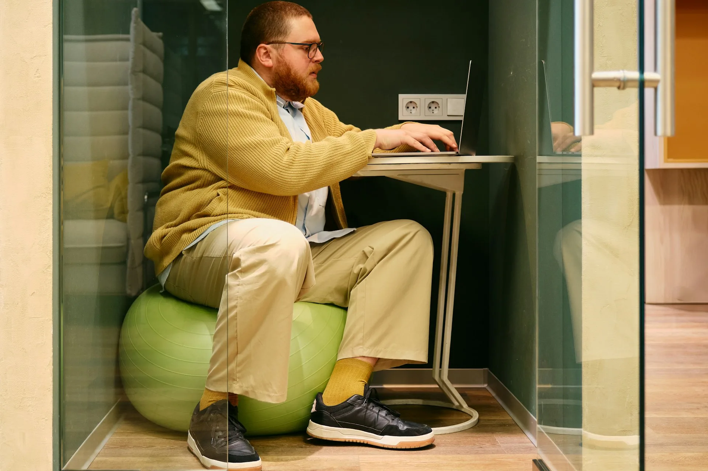

Pause active et Swiss Ball : bouger pour mieux travailler
La position assise prolongée nuit à notre santé et à notre posture.
Découvrez comment introduire des pauses actives et utiliser le Swiss
Ball au bureau pour prévenir les tensions et améliorer votre
bien-être.

Sédentarité et ergonomie : un enjeu de santé publique
Nous passons en moyenne plus de
9 à 12 heures par jour assis, que ce soit au
travail, en voiture ou à la maison. Cette sédentarité entraîne un
relâchement musculaire, des raideurs articulaires et favorise les
troubles musculosquelettiques.
Pour y remédier, il est essentiel d’introduire des
pauses actives : se lever régulièrement, bouger,
s’étirer et relancer la circulation sanguine. Ces micro-activités
contribuent à prévenir la fatigue et à améliorer la concentration.
Le Swiss Ball : un outil simple et efficace
Le Swiss Ball (ou ballon de gym) est un accessoire
polyvalent inventé en Suisse dans les années 60. Utilisé en
rééducation, puis en préparation physique, il permet de renforcer la
posture et la stabilité grâce à un travail d’équilibre permanent.
En position assise, il remplace la chaise de bureau et mobilise
naturellement les muscles profonds du dos et des abdominaux. Le
corps corrige en continu les petits déséquilibres du ballon, ce qui
entretient le tonus postural.
Bien choisir et utiliser son Swiss Ball
Choisissez le diamètre selon votre taille : assis, les genoux
doivent être à 90°.
Plus le ballon est gonflé, plus il est instable, donc plus
l’exercice est difficile.
Commencez progressivement : quelques minutes par jour suffisent au
début.
Pour une posture correcte, gardez les
pieds bien ancrés au sol, engagez la
ceinture abdominale et redressez-vous
naturellement. Cette position sollicite le gainage et améliore la
conscience corporelle.
Exemples d’exercices simples
Équilibre assis : levez un pied du sol 30
secondes tout en gardant le ventre contracté, puis changez de
jambe.
Mobilisation du bassin : faites rouler le ballon
doucement d’avant en arrière pour assouplir la colonne vertébrale.
Extension du dos : allongez-vous sur le ballon,
mains et pieds au sol, inspirez profondément, puis revenez en
position neutre.
Ces exercices favorisent la proprioception, renforcent les muscles
stabilisateurs et préviennent les douleurs lombaires.
Bouger pour mieux travailler
Intégrer le mouvement dans votre quotidien, même au bureau, est une
manière simple d’améliorer votre santé et votre énergie. Une posture
dynamique réduit les tensions, stimule la concentration et favorise
le bien-être global.
Et si votre pause devenait votre meilleure alliée
santé ?